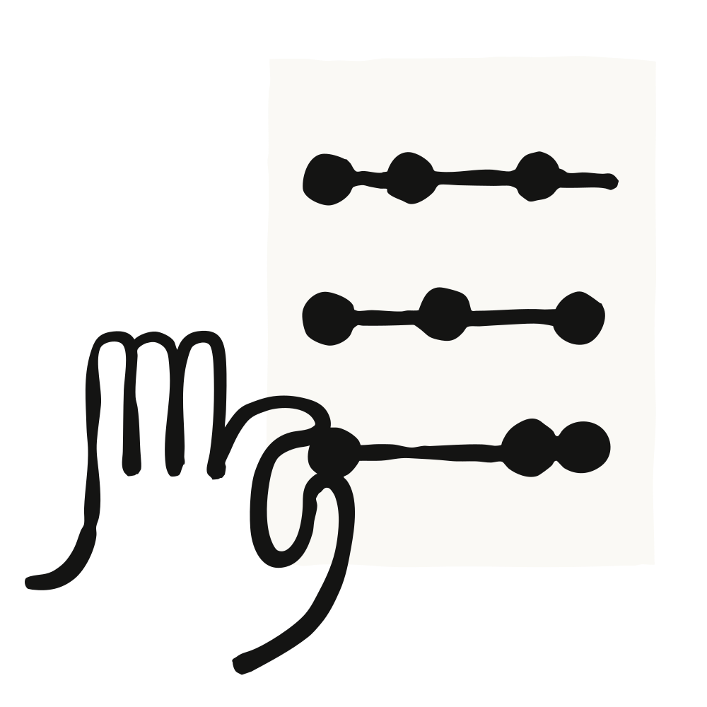
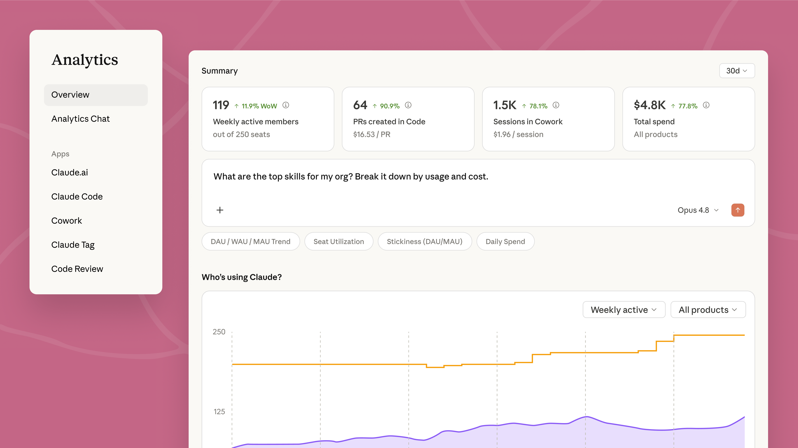

Claude Enterprise에 더 풍부한 관리자 분석(analytics), 모델 단위 이용 권한(entitlements), 지출 알림(spend alerts)을 새로 선보입니다. Claude가 조직 전반에서 점점 더 어렵고 복잡한 에이전트 작업(agentic work)을 맡게 되면서, 사용량과 비용 패턴은 일반적인 채팅 도구와는 다른 양상을 띱니다. 이 통제 기능들은 관리자에게 Claude가 어떻게 쓰이는지 이해할 수 있는 가시성과, 비용을 관리할 수 있는 도구를 제공합니다.
이번에 추가되는 기능들은 Anthropic이 이미 제공해 온 통제 기능 위에 쌓아 올린 것입니다. 모든 계층에서의 지출 상한(spend cap), 접근 및 모델 라우팅, 내보내기(export)와 Analytics API를 갖춘 사용량 분석 대시보드, 그리고 노력(effort) 제어가 그것입니다. 더 풍부한 분석과 더 세밀한 비용 통제는, 몇 달에 걸쳐 다져 온 이 통제 영역에 가장 최근 더해진 요소입니다.

이제 관리자용 분석 대시보드는 사용량과 비용을 그룹별·사용자별로 보여 주며, 생성된 아티팩트, 편집한 파일, 사용한 스킬(skill)과 커넥터(connector) 같은 산출물을 해당 비용 바로 옆에 함께 표시합니다. 관리자는 IT 팀이 이미 관리하고 있는 SCIM 그룹으로 필터링할 수 있어, 이 분석이 기존 조직도를 그대로 따라갑니다.
Claude Code에는 관리자 콘솔 안에서 가치(value)와 사용량(usage)에 초점을 맞춘 두 개의 새 탭이 추가되어 더 풍부한 인사이트를 제공합니다. '사용량' 탭은 조직 전반의 활성 개발자 수, 세션 수, 가장 많이 쓰인 명령어를 보여 주며 매일 업데이트됩니다. '가치' 탭은 사용량과 비용 데이터를 요약해, 생산성 향상, 커밋당 비용, 연간 가치를 추정함으로써 관리자가 Claude Code의 가치를 한눈에 파악할 수 있게 돕습니다. 모든 계산식은 탭에서 볼 수 있으며, 입력값도 조정할 수 있습니다.
Analytics chat은 이제 훨씬 폭넓은 질문에 답하고, 더 깊이 파고들 수 있는 풍부한 아티팩트를 만들어 냅니다. 관리자는 "이번 달에 Claude 사용량이 두 배로 늘어난 팀은 어디인가?" 또는 "좌석(seat)당 가치를 가장 많이 얻고 있는 곳은 어디인가?"처럼 평이한 언어로 질문할 수 있고, Claude는 내보내서 이해관계자와 공유할 수 있는 차트를 돌려줍니다.
사용량과 비용 데이터는 Analytics API를 통해 프로그래밍 방식으로도 이용할 수 있습니다. 덕분에 재무·IT 부서는 Datadog Cloud Cost Management, CloudZero처럼 이미 운영 중인 도구로 Claude 사용량·비용 데이터를 가져와, 나머지 클라우드·AI 지출과 나란히 볼 수 있습니다. 결과는 기간, 팀, 제품, 모델별로 필터링할 수 있습니다. 스킬은 자체 사용량과 비용을 보고하며, 새로운 엔드포인트는 플러그인 도입 현황과 아티팩트 생성을 추적합니다.
관리자는 사용량 가시성을 개별 사용자에게까지 확장할 수 있습니다. 비용, 제품·모델별 분석, 지출 한도 대비 진행 상황을 볼 수 있어 누구도 예기치 못한 차단(cutoff)에 부딪히지 않습니다. 사용자 본인도 시간에 따른 자신의 사용 추세, 즉 가장 많이 의존하는 제품·모델·스킬이 무엇인지, 그리고 그 활동이 지출로 얼마나 쌓이는지를 확인할 수 있습니다.
모델 기본값과 이용 권한(Model defaults and entitlements)을 사용하면, 관리자는 chat·Cowork·Claude Code 전반에서 새 대화가 어떤 Claude 모델로 시작할지 지정할 수 있습니다. 그래서 일상적인 작업이 반드시 가장 비싼 옵션으로 기본 설정되지 않도록 할 수 있습니다. 관리자는 특정 역할(role)에, 또는 조직 전체에 어떤 모델을 사용할 수 있게 할지 통제합니다.
지출 임계값 알림(spend-threshold alerts)은 조직 단위 지출 한도의 75%와 90%에 도달하면 관리자에게 알려, 누군가 작업 도중 차단되기 전에 한도를 올릴 시간을 줍니다. 사용자는 75%와 95% 임계값에서 앱 내 알림을 받고, Claude를 벗어나지 않고도 관리자에게 곧바로 한도 상향을 요청할 수 있습니다.
여러 그룹에 걸쳐 한도를 관리하는 조직을 위해, Admin API는 비용 통제 워크플로를 스크립트로 옮겨 조직 규모에 맞춰 통제가 확장되도록 합니다. 한도 상향 요청 검토를 자동화하고, 지출 한도에 근접한 구성원을 찾아내며, 급격히 변하는 사용량을 표시(flag)하는 일을 모두 대규모로 처리할 수 있습니다.
"비용 가시성은 한 달에 한 번 하는 행사가 아닙니다. 세밀한 지출 데이터와 알림은 청구 주기 말에 갑자기 놀라는 대신, 팀이 Claude를 어떻게 쓰고 있는지 주기적으로 다시 점검하도록 넌지시 일깨워 줍니다. Analytics API 덕분에 그 데이터를 우리가 매일 쓰는 도구로 가져올 수 있습니다."
"우리 회사 최고의 분기를 이끄는 사람들의 속도를 늦출 생각은 없고, 우리 CFO도 그걸 요구하지 않습니다. 그가 요구하는 건 ROI입니다. 우리는 사내 MCP 서버에 연결된 Claude를 4%의 매출 증대와 연결 지었고, 팀별로 비용을 비즈니스 임팩트 옆에 나란히 보는 것이야말로 그 주장을 설득력 있게 만드는 방법입니다."
"토큰 사용량만으로는 알 수 있는 게 많지 않습니다. 제가 정말 보고 싶은 것은 조직 전반에서 어떤 스킬이 반복해서 실행되는가입니다. 그것이야말로 가치를 보여 주는 진짜 신호입니다."
조직 전반에서 Claude를 관리하는 관리자라면, 관리자 콘솔에서 사용량·비용 분석을 살펴보고, 그룹별로 모델 기본값과 지출 한도를 설정하며, 초과 지출을 미리 방지하도록 지출 임계값 알림을 구성해 보세요. 사용량 데이터는 관리자 대시보드에서 확인할 수 있고, Analytics API를 이용하면 재무·IT 부서가 동일한 지표를 기존 리포팅 시스템으로 가져올 수 있습니다. 자세한 내용은 여기에서 확인하세요.